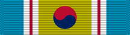

Republic of Korea Korean War Service Medal
Service awardROK
Awarded by the Republic of Korea for service during the Korean War.
Check your eligibility and build your ribbon rackHow you get it
You earn this by meeting the requirements. No recommendation is needed. If it's missing from your record, current members can have their MPF add it. Veterans can request it from AFPC with a Standard Form 180 and supporting documents.
You qualify if any of these apply
- Permanently assigned in Korea (or its territorial waters or airspace) between June 25, 1950 and July 27, 1953
- On temporary duty in Korea for 30 consecutive or 60 nonconsecutive days between June 25, 1950 and July 27, 1953
- Aircrew in aerial flight over Korea in or in support of combat operations between June 25, 1950 and July 27, 1953
Quick facts
- Category
- Foreign and international
- Type
- Service award
- Authorized devices
- None
- WAPS points
- 0
- Position in the AFPC listing
- 91 of 91 (listed in order of precedence)
Full AFPC fact sheet text
Background
On Aug. 20, 1999, the Secretary of Defense approved the acceptance and wear of the Republic of Korea Korean War Service Medal in recognition of the sacrifices of United States veterans of the Korean War.
Criteria
To receive this medal, military veterans must have served in the country of Korea, its territorial waters, or airspace within the inclusive period of June 25, 1950 to July 27, 1953. Service must have been performed while on permanent assignment in Korea, or while on temporary duty in Korea for 30 consecutive days or 60 nonconsecutive days, or while as a crewmember of aircraft in aerial flight over Korea participating in actual combat operations, or in support of combat operations.
Veterans who served in Japan, Guam, Okinawa, or the Philippines are not eligible for this medal.
Authorized device
None
Source: Republic of Korea Korean War Service Medal fact sheet, Air Force's Personnel Center